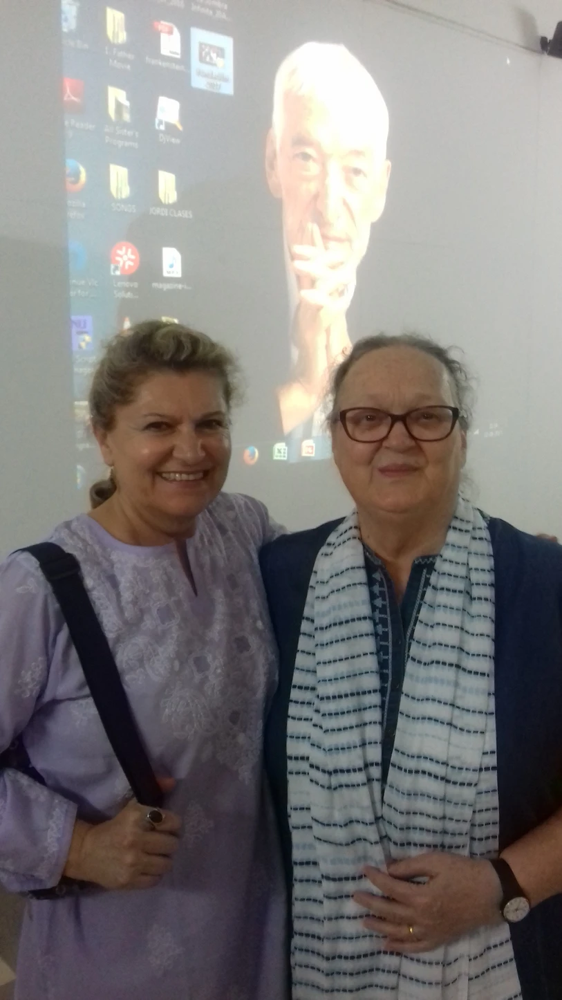
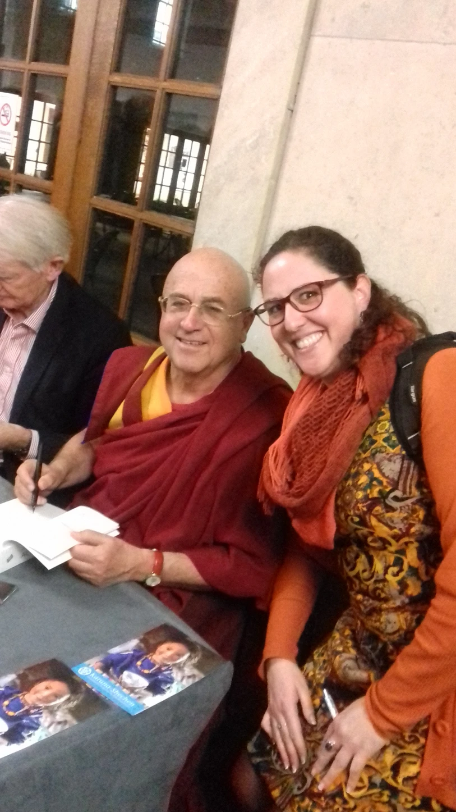
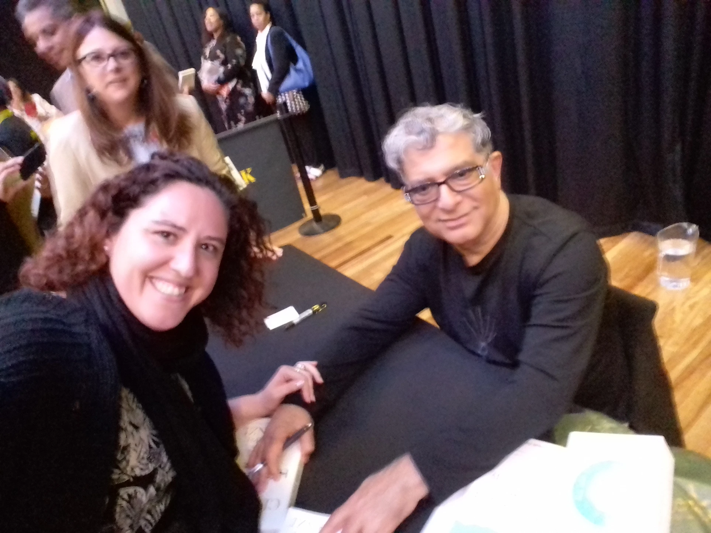
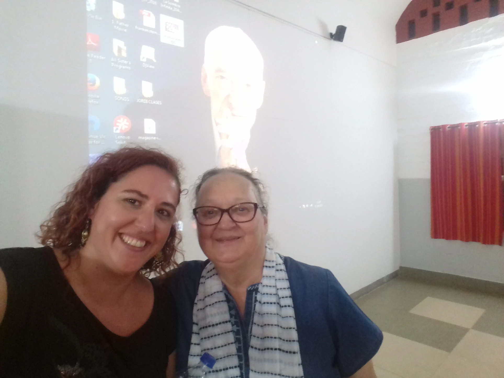

Elegí escribir mi primer post en inglés porque pensaba que mi expresión literaria en la lengua de Shakespeare era tan básica que me sería más fácil expresarme a la hora de responder la pregunta más complicada, difícil y compleja, además de más personal, que cada ser humano ha estado intentando descifrar desde el principio de los tiempos: "¿QUIÉN SOY? "
Realmente digo que debería ser amor porque cada vez que el amor está presente en mi vida soy más feliz y estoy en paz. Aunque no digo que sea fácil.
Sé que es difícil de entender en el día a día de nuestras básicas vidas, pero cuando eres consciente del poder de tu mente y del poder de tus pensamientos tu vida comienza a cambiar.
 Podría explicar con detalle aquí mi Curriculum Vitae pero realmente no creo que cambiase nada hacer un listado de todas las etiquetas impuestas a lo largo de mi vida laboral. Aún así, como sigo formando parte de esta sociedad, lo resumiré para aquellos que quieran conocerme mejor.
Llevo viviendo en el Reino Unido los últimos 5 años y estoy trabajando con nuestra futura generación de seres humanos, como su profesora de español. Mis guías/profesores espirituales son: mi madre*, Falele (My Godfather and catholic priest), Wayne Dyer, Louise Hay, Eckart Tolle, Matthieu Richard*, Deepack Chopra*, Sidra Jafri, Vicente and Ana Ferrer*, Gandhi, Jesús. Compartiré con vosotros sus enseñanzas, dichos, experiencias, y CÓMO (HOW) pueden ayudaros A SER FELIZ AHORA (TO BE HAPPY NOW). *[fotos hechas por mí]
Soy la hija pequeña de dos preciosas y cariñosas almas, y tengo una querida hermana. Mi familia ha sido una gran bendición en mi vida. Mis padres se divorciaron cuando yo era adolescente, y después de mucha ayuda entendí que era la mejor opción, porque hay maneras diferentes de mostrar amor, pero al fin y al cabo, TODO ES AMOR y siempre EL RESPETO ES LA MEJOR OPCIÓN.
Mi juventud fue intensa pero, ¿Quién no ha tenido una vida intensa de adolescente?
Desde que tenía 10 años estaba convencida de que iba a ser veterinaria, por lo tanto, terminé en la Universidad estudiando la maravillosa carrera que "salvaría a todos y cada uno de los animales de este planeta". Por supuesto no terminó como yo lo esperaba, y no puedo negar que no fuera fácil porque tardé más de lo esperado, pero al final conseguí mi muy deseada Licenciatura, y acabé con un con un título bajo el brazo, un maravilloso novio, pero sin ninguna idea acerca de qué iba a hacer mi futuro.
Resumiré los años siguientes: Trabajé de profesora particular con muchos niños, en mi primer trabajo "real"como veterinaria no tuve una buena experiencia, el lado positivo es que lo dejé pero con título de Experto Universitario en Ganadería Ecológica; trabajé para la Junta como investigadora y ayudé a escribir un libro sobre gallinas de puesta ecológicas, di conferencias y cursos sobre agricultura y ganadería ecológica (debo decir que realmente disfruté mucho en esa etapa); pero cuando la crisis llegó a España "decidí" un cambio de rumbo y elegí marcar la diferencia trabajando con adolescentes; volví a la universidad y estudié un Máster en Educación.
Por aquel entonces, ya había empezado mi caminar en la MEDITACIÓN, gracias a mi madre, (una alma preciosa que es terapeuta y voluntaria como profesora de Francés en la India) quién me enseñó cómo CENTRARME EN MI RESPIRACIÓN Y EN NUESTRO MOMENTO PRESENTE.
 No me gustaría compartir malas experiencias, porque siento que LA ACEPTACIÓN Y EL PERDÓN SON LAS LLAVES PARA NUESTRA FELICIDAD; digamos que he atravesado situaciones dolorosas durante mi vida, que las superé, y he llegado a ser la cariñosa mujer que soy, quizás comparta algo más con vosotros en otro post. ;-)
En resumen es que cuando ahorré suficiente dinero fui a EEUU a visitar a mis hermanas americanas (no de
sangre pero por elección), una vez allí, me di cuenta de cuán importante es SER EL OBSERVADOR DE TU
VIDA.

Como resultado me lié la manta a la cabeza y di un vuelco a mi vida. Dejé mi trabajo de profesora en una
academia y me vine a la aventura a vivir a Inglaterra. Ese gran paso me abrió los ojos a darme cuenta de
que
ya era feliz; PORQUE LA FELICIDAD ESTÁ DENTRO DE TI PERO NO ERES CONSCIENTE...hasta que lo eres, y ese
es el
objetivo de este blog: ayudarte a que abras los ojos a tu felicidad, que está dentro de ti.